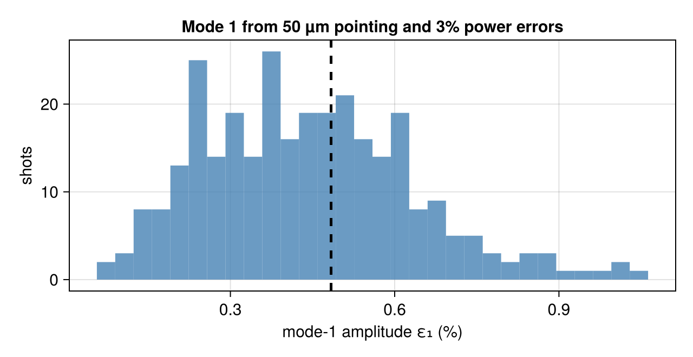

Pointing and power errors
No two shots point their beams the same way. Each NIF beam lands within about 50 µm (rms) of where it was aimed, and the beams' powers differ from their requests by a few percent. These errors are independent from beam to beam, so they do not cancel the way the symmetric design does: they leave a random low-mode asymmetry in the drive, and the mode-1 part of it, a flux difference between opposite sides of the capsule, displaces the hot spot (about 100 km/s per percent of mode-1 flux; MacGowan et al., High Energy Density Physics 40, 100944, 2021).
This tutorial computes how much asymmetry such errors leave in a NIF hohlraum's drive, checks the linear estimate against a Monte Carlo of full evaluations, and uses it two ways: to infer the errors behind a measured asymmetry, and to design a pointing that is less sensitive to them. It introduces mode_sensitivity, mode_uncertainty, sample_modes, infer_errors and the uncertainty keyword of the symmetry objectives.
using Briareus
using CairoMakie
using LinearAlgebra
using Printf
using Random
CairoMakie.activate!(type = "png", px_per_unit = 2)
set_theme!(fontsize = 15, linewidth = 2.5)The hohlraum
The hohlraum and pointing of the Freeing a bundle for radiography tutorial: 10.1 × 5.75 mm with 3.1 mm entrance holes and a 0.9 mm capsule, 48 quads at 8 TW with their phase-plate spots, outer cones aimed on the axis near the entrance-hole planes and inner cones across the hohlraum. The mesh is coarser than the default to keep the tutorial quick.
target = hohlraum(length = 10.1, radius = 2.875, leh_radius = 1.55, capsule_radius = 0.9,
wall = gold(albedo = 0.85, conversion = 0.8), h = 0.45, capsule_h = 0.12)
p = GroupPointing(nif_quads(power = 8.0); fields = (:z, :r))
published = Dict(:outer50 => (5.01, 0.0), :outer44 => (5.20, 0.0),
:inner30 => (3.63, -0.60), :inner23 => (3.09, -1.09))
x0 = reduce(vcat, [[published[k]...] for k in p.keys])
quads = apply(p, x0)
scenario = Scenario(target, quads; observe = :capsule, parameterization = p,
viewfactor_kw = (; closed = true))
@printf("%d elements, %d quads\n", nelements(target), length(quads))3204 elements, 48 quadsHow each beam's errors move the drive
Write the capsule's incident flux in real spherical harmonics, $c_{lm}$ (see the radiography tutorial), and its shape as $c_{lm}/c_{00}$. A beam's errors are its displacement transverse to the beam, along the two axes of its elliptical spot, and a fractional power error. Each beam's deposition depends on its own errors only, so mode_sensitivity differentiates every beam's contribution with three dual numbers in one pass, exactly. Against central differences of full evaluations:
lmax = 4
sens = mode_sensitivity(scenario, quads; lmax)
shape(bs) = (c = flux_ylm(evaluate(scenario, bs); lmax); c ./ c[1])
worst = 0.0
for (bi, k) in ((3, 1), (17, 2), (30, 3), (44, 1))
b = quads[bi]
e1, e2 = spot_axes(b)
move(δ) = k == 3 ? remake(b; power = b.power * (1 + δ)) :
remake(b; aim = b.aim + δ * (k == 1 ? e1 : e2))
h = 1e-4
fd = (shape([j == bi ? move(h) : quads[j] for j in eachindex(quads)]) .-
shape([j == bi ? move(-h) : quads[j] for j in eachindex(quads)])) ./ 2h
global worst = max(worst, maximum(abs, fd .- sens.J[:, 3(bi-1)+k]) / maximum(abs, fd))
end
@printf("largest relative difference from central differences: %.1e\n", worst)largest relative difference from central differences: 2.2e-09The columns are the drive's response to each error. For mode 1, the pointing columns of the inner quads, whose spots land on the wall across from their ports near the waist, are the largest:
l1 = 2:4 # c_1,-1, c_10, c_11
per_beam(k) = [norm(sens.J[l1, 3(b-1)+k]) for b in eachindex(quads)]
for g in (:inner23, :inner30, :outer44, :outer50)
idx = findall(b -> b.group === g, quads)
@printf("%-8s |∂c₁/∂(pointing)| %.3f per mm, |∂c₁/∂(power)| %.3f per unit fraction\n", g,
sum(per_beam(1)[idx] .+ per_beam(2)[idx]) / 2length(idx), sum(per_beam(3)[idx]) / length(idx))
endinner23 |∂c₁/∂(pointing)| 0.008 per mm, |∂c₁/∂(power)| 0.011 per unit fraction
inner30 |∂c₁/∂(pointing)| 0.008 per mm, |∂c₁/∂(power)| 0.012 per unit fraction
outer44 |∂c₁/∂(pointing)| 0.003 per mm, |∂c₁/∂(power)| 0.009 per unit fraction
outer50 |∂c₁/∂(pointing)| 0.003 per mm, |∂c₁/∂(power)| 0.008 per unit fractionThe asymmetry the errors leave
With independent errors of rms size $\sigma_j$, the covariance of the shape is $J\,\mathrm{diag}(\sigma_j^2)\,J^\mathsf{T}$ to first order. mode_uncertainty takes the rms pointing as the length of the displacement ($\sigma/\sqrt 2$ along each axis) and the rms fractional power, and returns, for each degree $l$, the rms of $\sqrt{\sum_m (\delta c_{lm}/c_{00})^2}$, the share of mode $l$ the errors use up. For NIF's 50 µm pointing and a 3% power imbalance:
errors = (; pointing = 0.05, power = 0.03)
u = mode_uncertainty(scenario, quads; errors..., lmax)
for l in 1:lmax
@printf("l = %d: rms %.3f%% of the mean flux\n", l, 100 * u.rms_mode[l])
end
pointing_only = mode_uncertainty(scenario, quads; pointing = 0.05, power = 0.0, lmax)
@printf("mode 1 from pointing alone %.3f%%, from power alone %.3f%%\n", 100 * pointing_only.rms_mode[1],
100 * mode_uncertainty(scenario, quads; pointing = 0.0, power = 0.03, lmax).rms_mode[1])l = 1: rms 0.279% of the mean flux
l = 2: rms 0.212% of the mean flux
l = 3: rms 0.132% of the mean flux
l = 4: rms 0.033% of the mean flux
mode 1 from pointing alone 0.199%, from power alone 0.196%The linear estimate holds while the errors are small against the spots' scale. A Monte Carlo of full evaluations, each with fresh random errors on every beam (sample_modes), is the independent check:
samples = sample_modes(scenario, quads; errors..., n = 300, lmax, rng = MersenneTwister(2026))
mc = [sqrt(sum(abs2, samples[l^2+1:(l+1)^2, :] .- u.c[l^2+1:(l+1)^2]) / size(samples, 2))
for l in 1:lmax]
for l in 1:lmax
@printf("l = %d: linear %.3f%%, Monte Carlo %.3f%% (ratio %.2f)\n", l, 100u.rms_mode[l],
100mc[l], mc[l] / u.rms_mode[l])
endl = 1: linear 0.279%, Monte Carlo 0.277% (ratio 0.99)
l = 2: linear 0.212%, Monte Carlo 0.208% (ratio 0.98)
l = 3: linear 0.132%, Monte Carlo 0.131% (ratio 0.99)
l = 4: linear 0.033%, Monte Carlo 0.033% (ratio 0.99)They agree to the sampling error of 300 shots, a few percent. The mode-1 amplitude over the samples, as a hot-spot velocity budget at 100 km/s per percent:
ε1 = [sqrt(3 * sum(abs2, samples[2:4, k])) for k in axes(samples, 2)] # mode_amplitude
fig = Figure(size = (640, 330))
ax = Axis(fig[1, 1], xlabel = "mode-1 amplitude ε₁ (%)", ylabel = "shots",
title = "Mode 1 from 50 µm pointing and 3% power errors")
hist!(ax, 100 .* ε1; bins = 30, color = (:steelblue, 0.8))
vlines!(ax, [100 * sqrt(3) * u.rms_mode[1]]; color = :black, linestyle = :dash)
fig
@printf("ε₁: median %.2f%%, 90th percentile %.2f%% (≈ %.0f km/s); linear rms √3 × %.3f%% = %.2f%%\n",
100 * sort(ε1)[end÷2], 100 * sort(ε1)[9end÷10], 100 * 100 * sort(ε1)[9end÷10],
100 * u.rms_mode[1], 100 * sqrt(3) * u.rms_mode[1])ε₁: median 0.43%, 90th percentile 0.67% (≈ 67 km/s); linear rms √3 × 0.279% = 0.48%Correlated errors
Some errors are shared. A cone's beams can all be off the same way, every beam of a quad can carry the same power error, and a target displaced from chamber center moves every aim by the same vector relative to the target. mode_uncertainty takes these as group_pointing and group_power, with groups a beam field such as :quad or a function of the beam, and positioning, an rms length. A shared displacement is transverse to the group's mean beam direction, so a group must have one: a cone's beams in one hemisphere do, the whole cone (groups = :group) does not. It also moves beams along themselves (their focus moves with the aim), so these errors propagate through a fourth per-beam sensitivity. rms_by splits the budget by source. The errors here are 50 µm pointing per beam, 20 µm shared per cone in each hemisphere and 30 µm target positioning:
cone(b) = (b.group, b.port[3] > 0)
shared = (; pointing = 0.05, group_pointing = 0.02, groups = cone, positioning = 0.03)
us = mode_uncertainty(scenario, quads; shared..., lmax)
for l in 1:lmax
@printf("l = %d: total %.3f%% = beams %.3f, cones %.3f, positioning %.3f (in quadrature)\n", l,
100us.rms_mode[l], 100us.rms_by.beam[l], 100us.rms_by.group[l], 100us.rms_by.positioning[l])
end
ss = sample_modes(scenario, quads; shared..., n = 200, lmax, rng = MersenneTwister(7))
@printf("Monte Carlo / linear, l = 1..4: %s\n",
join((@sprintf("%.2f", sqrt(sum(abs2, ss[l^2+1:(l+1)^2, :] .- us.c[l^2+1:(l+1)^2]) / size(ss, 2)) /
us.rms_mode[l]) for l in 1:lmax), " "))l = 1: total 0.251% = beams 0.199, cones 0.077, positioning 0.131 (in quadrature)
l = 2: total 0.183% = beams 0.175, cones 0.053, positioning 0.002 (in quadrature)
l = 3: total 0.130% = beams 0.117, cones 0.032, positioning 0.047 (in quadrature)
l = 4: total 0.033% = beams 0.031, cones 0.010, positioning 0.003 (in quadrature)
Monte Carlo / linear, l = 1..4: 1.01 1.01 1.02 1.00A shared displacement adds coherently over the beams it moves: 20 µm shared by each half-cone gives about 40% of the $l = 1$ budget of 50 µm scattered independently over every beam. The two halves of a cone move independently, so they also feed $l = 2$. The target's offset is a translation of the whole drive pattern: it feeds the odd modes ($l = 1, 3$) and leaves $l = 2$ alone.
Reading the errors back from a measured mode
The inverse question comes after a shot: the implosion showed a mode-1 asymmetry; which errors could have caused it? Trending measured low modes against beam and target data over many shots, as MacGowan et al. (2021) did for NIF's mode 1, starts from this question for each shot. infer_errors answers it linearly: with the measured departure $\Delta c$ (measured minus nominal $c_{lm}/c_{00}$), its measurement error, and the same error priors as mode_uncertainty, it returns the most probable errors and their posterior spread.
A synthetic measurement: the target sits 30 µm off center along x, so every aim moves 30 µm along +x relative to it. The "measured" $l = 1$ comes from a full evaluation, with an assumed measurement error of 0.01 percentage points per component. The prior allows every error source of the previous section:
prior = shared
offset = [0.03, 0.0, 0.0]
moved = [remake(b; aim = b.aim + offset) for b in quads]
c_nom, c_meas = shape(quads), shape(moved)
Δc(l) = c_meas[l^2+1:(l+1)^2] .- c_nom[l^2+1:(l+1)^2]
inv1 = infer_errors(scenario, quads, (1 => Δc(1),); sigma = 1e-4, prior...)
pos(r) = join((@sprintf("%+.1f ± %.1f", 1000r.positioning[i], 1000r.sigma[end-3+i]) for i in 1:3), ", ")
@printf("measured l = 1: positioning (µm) %s; %.2f of 3 combinations resolved\n", pos(inv1), inv1.resolved)
for t in inv1.sources[1:4]
@printf(" %-28s explains %5.1f%%\n", t.source, 100t.fraction)
endmeasured l = 1: positioning (µm) +6.9 ± 15.2, -0.0 ± 15.1, +0.0 ± 14.3; 2.98 of 3 combinations resolved
positioning explains 23.0%
(:inner23, true) pointing explains 5.6%
(:inner23, false) pointing explains 5.6%
Q42T pointing explains 4.3%The direction is right, and the positioning is the largest single source, but it explains only a quarter of the measurement and its estimate falls well short of 30 µm. Three numbers do not separate a target offset from the same mode-1 pattern made by the 96 independent beam displacements and the cones' shared ones: the prior allows all of them, so the most probable explanation spreads the blame. $l = 3$, which a translation also drives, separates them a little further:
inv13 = infer_errors(scenario, quads, (1 => Δc(1), 3 => Δc(3)); sigma = 1e-4, prior...)
@printf("measured l = 1, 3: positioning (µm) %s; %.2f of 10 resolved\n", pos(inv13), inv13.resolved)
for t in inv13.sources[1:3]
@printf(" %-28s explains %5.1f%%\n", t.source, 100t.fraction)
end
@printf("posterior/prior rms: positioning %.2f %.2f %.2f; median over all %d errors %.3f\n",
(inv13.sigma[end-2:end] ./ inv13.prior_sigma[end-2:end])..., length(inv13.x),
sort(inv13.sigma ./ inv13.prior_sigma)[end÷2])measured l = 1, 3: positioning (µm) +10.7 ± 13.9, +0.0 ± 13.7, -0.0 ± 8.2; 9.50 of 10 resolved
positioning explains 35.6%
Q42T pointing explains 7.6%
Q33B pointing explains 7.6%
posterior/prior rms: positioning 0.80 0.79 0.47; median over all 163 errors 0.989Ten numbers determine at most ten combinations of the errors, and most of the errors keep their prior spread. The answer is only as specific as the prior: if the beams are known to have pointed well (their errors measured, say), a prior on the positioning alone recovers the offset from $l = 1$ by itself:
inv_pos = infer_errors(scenario, quads, (1 => Δc(1),); sigma = 1e-4, pointing = 0.0,
positioning = 0.03)
@printf("positioning-only prior: positioning (µm) %s; residual %.4f%% of |Δc| %.4f%%\n",
pos(inv_pos), 100norm(inv_pos.residual), 100norm(inv_pos.measured))positioning-only prior: positioning (µm) +29.2 ± 2.8, -0.0 ± 2.8, +0.0 ± 1.7; residual 0.0028% of |Δc| 0.1051%29 ± 3 µm against the true 30. With the broad prior, the positioning's posterior rms fell only to 0.8 of its prior along x, while the median error kept 99% of its prior spread: the measurement constrains any one error only weakly unless the prior holds the rest small. For the broad-prior case, the inferred errors applied to the beams (beams) reproduce the measurement in a full evaluation:
c_back = shape(inv13.beams)
rows13 = [mode_index(l, m) for (l, m) in inv13.components]
@printf("|Δc| %.4f%%, |prediction J x̂ − Δc| %.4f%%, full evaluation − prediction %.4f%%\n",
100norm(inv13.measured), 100norm(inv13.residual),
100norm(c_back[rows13] .- c_nom[rows13] .- inv13.predicted))|Δc| 0.1166%, |prediction J x̂ − Δc| 0.0021%, full evaluation − prediction 0.0003%Does the pointing change the budget?
The errors' share of each mode depends on where the spots land: a spot on a steep part of the drive's response moves the shape more for the same displacement. First tune the cones (aim and power per cone, aims within 1.5 mm axially and 1 mm radially, powers within 40%) to null $l = 1$–$4$ at fixed drive, and compare the budgets of the published and the tuned designs:
p3 = GroupPointing(quads; fields = (:z, :r, :power))
s3 = Scenario(target, quads; observe = :capsule, parameterization = p3,
viewfactor_kw = (; closed = true))
x3 = initial_parameters(p3)
a0 = flux_moments(evaluate(s3, x3))[1]
lo, hi = bounds(p3, x3; z = 1.5, r = 1.0, power = 0.4)
keepout = (ApertureKeepOut(target), SphereKeepOut(target))
modes = (1 => 1.0, 2 => 1.0, 3 => 1.0, 4 => 1.0)
tuned = optimize_pointing(s3, symmetry_objective(; modes, odd = 0.0, drive = a0, keepout);
x0 = x3, lower = lo, upper = hi, iterations = 200)
function budget_row(label, x)
ev = evaluate(s3, x)
a = flux_moments(ev; lmax = 4)
ur = mode_uncertainty(s3, ev.beams; errors..., lmax)
@printf(" %-10s %+7.3f%% %+7.3f%% %s
", label, 100a[3] / a[1], 100a[5] / a[1],
join((@sprintf("%.3f%%", 100x) for x in ur.rms_mode), " "))
return ur.rms_mode
end
println(" design P₂/P₀ P₄/P₀ rms from the errors: l = 1 2 3 4")
budget_row("published", x3)
tuned_budget = budget_row("tuned", tuned.x); design P₂/P₀ P₄/P₀ rms from the errors: l = 1 2 3 4
published -14.580% +0.137% 0.279% 0.212% 0.132% 0.033%
tuned -0.025% +0.091% 0.233% 0.158% 0.091% 0.022%The tuned design leaves less to the errors (l = 1 from 0.28% to 0.23%). It has also moved power from the inner cones, whose errors weigh most per beam (above), to the outer ones. With uncertainty, symmetry_objective minimizes instead the expected value of each mode's square over the errors, the nominal value plus the variance they add (at about three times the cost per evaluation, through nested dual numbers). Started from the tuned design:
robust = optimize_pointing(s3, symmetry_objective(; modes, odd = 0.0, drive = a0, keepout,
uncertainty = errors);
x0 = tuned.x, lower = lo, upper = hi, iterations = 30)
robust_budget = budget_row("robust", robust.x)
@printf("largest change of a cone parameter: %.3f; of the l = 1 budget: %+.1f%%
",
maximum(abs, robust.x .- tuned.x), 100 * (robust_budget[1] / tuned_budget[1] - 1)) robust -0.025% +0.091% 0.233% 0.158% 0.091% 0.022%
largest change of a cone parameter: 0.000; of the l = 1 budget: -0.0%The robust objective barely moves the tuned design: within these bounds, where the cones point hardly changes how much asymmetry independent beam errors leave. They set a floor, about a quarter of a percent of mode 1 here, that only better pointing accuracy and power balance lower.
What this checks
- The per-beam sensitivities from dual numbers match central differences of full evaluations (printed above; the test suite checks them to 1e-6).
- The linear propagation of independent errors matches a Monte Carlo of full evaluations to its sampling error, mode by mode; so do the shared (cone and target-positioning) errors. The test suite also checks that a group of one beam reproduces the independent errors exactly, and that a shared target displacement matches central differences.
- With a positioning-only prior, the inverse recovers a known 30 µm target offset from a full evaluation's mode 1 (29 ± 3 µm, printed above), and a full evaluation of the inferred errors departs from their linear prediction by 0.0003 percentage points. The test suite also recovers one hemisphere cone's shared displacement, checks the data-space posterior against the dense solve in error space ($(\Sigma_p^{-1} + J^\mathsf{T}\Sigma_m^{-1}J)^{-1}$, to 1e-8), and that full evaluations of the inferred beams depart from $J\hat x$ at second order only.
- The robust objective adds exactly the propagated variance to the nominal one (test suite), and its gradients, through nested dual numbers, match finite differences.
This page was generated using Literate.jl.